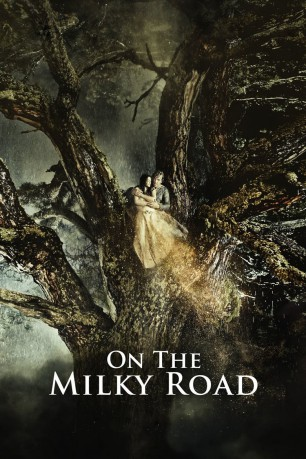

#8227 On the Milky Road
 
 IMDB-Wertung: 6.6 / 10
IMDB-Wertung: 6.6 / 10  Tomatometer: 57
Tomatometer: 57  Metascore: 0
Metascore: 0 
Milchmann Kostja (Emir Kusturica) geht auch in Kriegszeiten seinem Geschäft nach: Jeden Tag überquert er auf seinem Esel die feindlichen Linien der beiden Bürgerkriegsparteien und setzt sein Leben aufs Spiel, um den Soldaten Milch zu verkaufen. Mit viel Glück kehrt er immer wieder gesund nach Hause zurück, wo ihn seine zukünftige Frau, die hübsche Dorfbewohnerin Milena (Sloboda Mićalović), erwartet. Doch das Schicksal durchkreuzt Kostjas Pläne für eine friedvolle und ereignislose Zukunft, als es ihn mit einer mysteriösen, aber bereits vergebenen Italienerin (Monica Bellucci) zusammenführt, in die er sich unsterblich verliebt. Es ist der Beginn einer leidenschaftlichen und verbotenen Liebe, denn auch ein äußerst eifersüchtiger General ist der Schönen verfallen und nur eine abenteuerliche und gefährliche Flucht ermöglicht es Kostja und seiner Angebeteten, zusammen zu sein.
Jahr: 2016
Dauer: 125 Minuten
FSK: 16
Land: Serbien Studio: Weltkino FilmverleihTonspuren:
Untertitel: Deutsch,
Auflösung: 1080p (1920x808) Größe: 8222 MB
Genre: Drama, Komödie, Krieg, Fantasy, Liebe
Regisseur: Emir Kusturica
Drehbuch: Emir Kusturica
Soundtrack: Stribor Kusturica
Darsteller:
- Emir Kusturica als Kosta
 Monica Bellucci als Bride
Monica Bellucci als Bride- Sloboda Micalovic als Milena
- Predrag 'Miki' Manojlovic als Zaga
 Sergej Trifunovic als
Sergej Trifunovic als - Bajram Severdzan als Matchmaker
- Maria Darkina als Luna (uncredited)
- Aleksandar Sasa Saric als Fat Man
- Novak Bilbija als Shepherd
- Davor Janjic als
- Petar Mircevski als Priest-Cum-Cook
- Vitomir Jefic als Vito
- Milojka Andric als Old Woman
- Ninoslav Culum als Radio Operator
- Milorad Ukropina als Mico
- Stevan Uscumlic als Chief Assistant 2
- Elvedin Musanovic als Edo
- Zoran Cvijanovic als Helicopter Co-pilot
- Milan Neskovic als Helicopter Pilot
- Branislav Fistric als Soldier 1
- Tomislav Sokic als Soldier 2
- Marko Ukropina als Soldier 3
- Milorad Supic als Doctor
- Rajka Milinkovic als Nurse 1
- Novka Miletic als Nurse 2
- Kresimir Bebek als Croatian Soldier 1
- Rudolf Bebek als Croatian Soldier 2
- Zora Stijacic als Feisty Woman
- Milorad Pajdo Saric als Bartender
- Khacathur Alamzian als Taylor
- Miroslav Zubac als Man from Timber
- Rade Boskovic als Bookie
- Anastasija Vujovic als Girl from Refugee Camp
- Milja Supljeglav als Old Woman from Village
- Stribor Kusturica als Band
- Darko Kurtovic als
- Ratka Radmanovic als
Datei: X:\2016(N-Z)\On the Milky Road (2016, FSK16, 1920x808).mkv seit 11.02.2018
Festplatte: HD 2016(A-Z)
 Es gibt insgesamt 182 Filme in der Gruppe '2016(N-Z)'
Es gibt insgesamt 182 Filme in der Gruppe '2016(N-Z)'